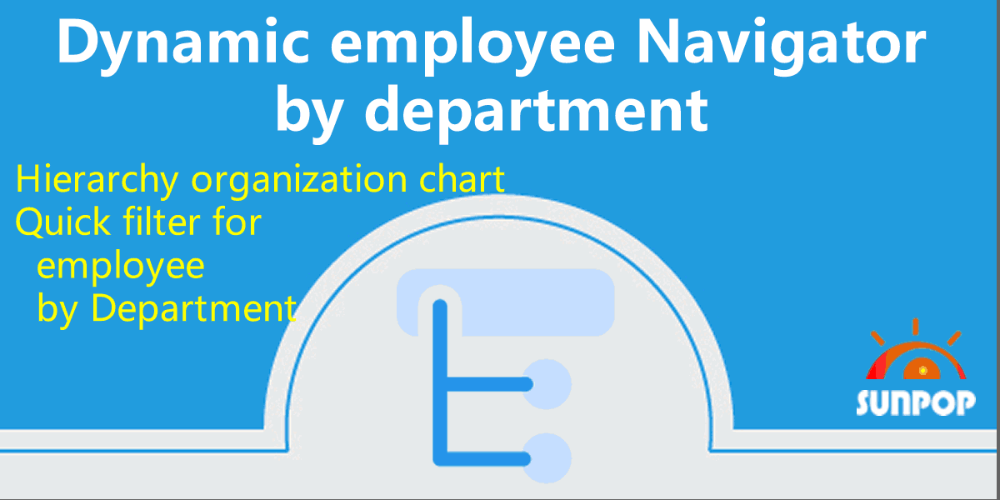

HR 员工部门导航
Superbar 高级搜索，组织架构树形导航
按部门树形浏览员工，HR 组织架构图
含组织架构图与高级搜索侧栏
Odoo 18
企业版与社区版
多公司
多语言
Superbar 高级搜索，组织架构树形导航
按部门树形浏览员工，HR 组织架构图
含组织架构图与高级搜索侧栏
为Odoo HR模块提供Superbar高级搜索侧栏，按部门树形浏览员工，支持组织架构图导航。
适用于列表、看板、透视表、图表视图及搜索更多弹窗。
HR 模块专用的 Superbar 高级搜索
Parent children hierarchy
按部门树形结构浏览员工，真实父子层级关系导航
m2o, m2m, date, boolean, selection, number
多种字段类型的高级侧栏搜索，快速定位目标数据
List, Kanban, Pivot, Graph
搜索侧栏适用于列表、看板、数据透视和图表视图
HR hierarchy tree
直观展示HR部门层级和员工组织架构关系
完整的多语言翻译支持，适配全球化企业部署。原生多公司架构，数据严格隔离。
支持 Odoo 19, 18, 17, 16, 15, 14, 13, 12，EE/CE/.SH，兼容企业版、社区版及在线 SaaS。
基于 LGPL-3 协议开源，代码透明可审计，支持二次开发与定制。
核心功能界面一览

安装模块
安装即用
打开员工列表
侧边栏出现
部门树形浏览
浏览树形结构
高级搜索筛选
按字段过滤